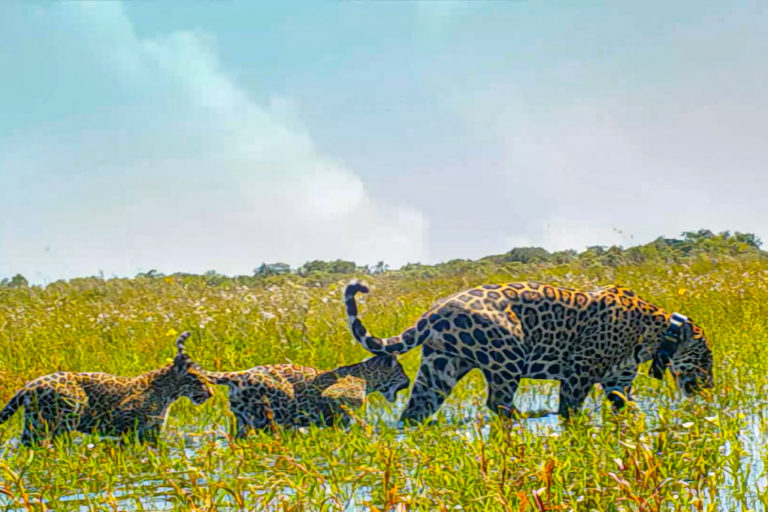
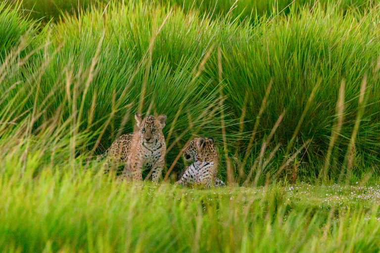
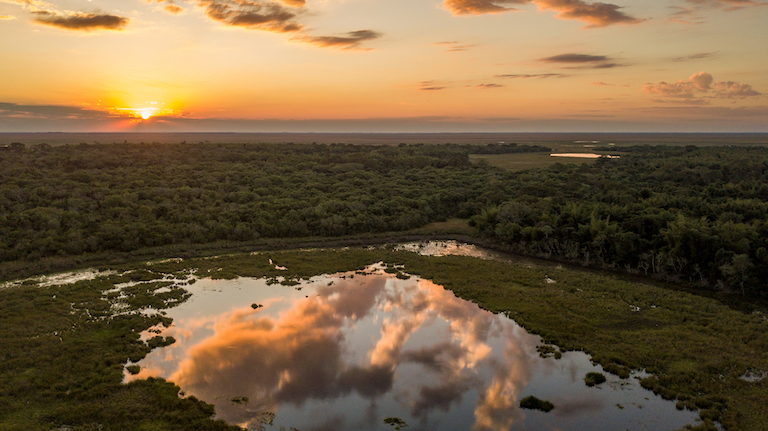

Conservationists recently released three jaguars — a mother and two cubs — into Gran Iberá Park in northeastern Argentina’s Corrientes province in an attempt to rewild the local ecosystem.
Jaguars haven’t been present in the Iberá Wetlands for the past 70 years, after hunting and habitat loss drove them to local extinction.
The ultimate goal of the jaguar reintroduction program is to reestablish a healthy, genetically diverse population of jaguars in Gran Iberá Park, which has the capacity to hold about 100 jaguars, according to conservationists.
It’s been 70 years since jaguars left their round, four-toed footprints in the ground of the Iberá Wetlands, a 1.3-million-hectare (3.2-million-acre) tract of swamps, waterways and islands in northeastern Argentina’s Corrientes province. But things are changing now.
Two weeks ago, conservationists opened up a pen that held two 4-month-old jaguar cubs, Karai and Porã, and their mother, Mariua, giving them free and open access to Gran Iberá Park, a 709,717-hectare (1.75-million-acre) park established in 2018 by the NGO Tompkins Conservation. This release is part of a grand scheme to rewild the Iberá Wetlands by reinstating several species, including the jaguar (Panthera onca), which was driven to local extinction due to hunting and habitat loss.
Sebastian di Martino, conservation director at Fundación Rewildling Argentina, an NGO that works in collaboration with Tompkins Conservation, the Argentine government, Argentina’s national parks agency, and the Corrientes provincial government, said the release of the jaguars is the result of 10 years of hard work.
“For us, it is incredible … seeing these animals leaving the pen in the video and leaving their footprints in the middle of the Iberá Wetlands,” di Martino told Mongabay in an interview. “We’ve had the opportunity to spot them twice already, free [in the park]. It’s an incredible accomplishment for us.”
Jaguar populations used to sprawl across the Americas, ranging from the southwestern United States all the way down to Patagonia in southern Argentina. But the species, which is classified as near threatened by the IUCN, has been eradicated from 40% of its original range due to habitat loss and fragmentation, hunting, and human-wildlife conflicts.
In Argentina, the situation is particularly dire. In the last 150 years, jaguars have lost more than 95% of their territory, according to di Martino. It’s estimated there are only 200 to 300 jaguars left in the country, mainly in the provinces of Salta, Jujuy and Misiones, although a few could also remain in the Chaco Forests of Chaco, Formosa and Santiago del Estero provinces, he said.

Mariua, Karai and Porã, stepping out into Gran Iberá Park. Image by Tompkins Conservation.
The plan is to release at least another six jaguars into Gran Iberá Park over about a year, with the ultimate goal of building a healthy, genetically diverse population, said di Martino. The team will initially release females since they have “smaller territories and disperse less,” which should help ensure that the jaguars stay within the park, he said.
“Once we release several females, then we release the first male because the male sets the territory based not only on the prey availability, but also on female availability and if we don’t have a group of females already living in the territory, he will also start to disperse [in search of] females.”
The park has the capacity to hold about 100 jaguars, di Martino said.
For the past 14 years, other animals, such as giant anteaters (Myrmecophaga tridactyla), pampas deer (Ozotoceros bezoarticus), white-lipped peccaries (Tayassu pecari), and red-and-green macaws (Ara chloropterus), have also been reintroduced into the park as part of an ongoing rewilding process.
Agustín Paviolo, a jaguar expert researcher at CONICET (the National Research Council of Argentina) at the Instituto de Biologia Subtropical of the University of Misiones in Argentina, who acts as a scientific adviser for the jaguar reintroduction program, said he thinks the new population will be “very important to jaguar conservation in Argentina.”

The cubs living freely in Gran Iberá Park. Image by Tompkins Conservation.
“The project has been carefully planified for many years,” Paviolo told Mongabay in an email. “[A] new National Park has been created in the area, and Rewilding [Argentina] has a good team, infrastructure, and resources to maintain the initiative, so we expect that we will have success and that in [a] few years we can have a new population there.”
Paviolo also said he expects the reintroduction of jaguars to “change the entire ecosystem” by regulating wildlife populations and prey behaviors.
“The experience is very relevant to jaguar conservation worldwide,” he said. “We are not only restoring a population where the species became extinct but also we are learning how to reproduce and prepare jaguars to be reintroduced in the wild. We expect that this experience could serve to lead the way of jaguar recovery in many regions of America.”
Di Martino says he does not anticipate any human threats to the jaguars since Fundación Rewilding Argentina and its partners have worked closely with the local community to ensure support for Gran Iberá Park and its rewilding process.
“We have now good examples of small towns whose economy is based mostly [on] ecotourism [and] wildlife watching,” di Martino said. “So in that way, people [have] become supportive of this jaguar reintroduction.”

Gran Iberá Park. Image by Tompkins Conservation.
Marcos García Rams, a cattle ranch owner and ecotourism operator in Corrientes province, said the jaguar reintroduction program brings him “great satisfaction,” and that he is not concerned about the animals preying on his cattle.
“I’m not worried at all because the territory is full of prey for the jaguars,” he told Mongabay in an audio message in Spanish. “Within the park’s 700,000 hectares, there’s room for many jaguars. It will take a long time for their population to fill the space.”
Rams also said he is aware that the jaguars will help control prey species such as capybaras, marsh deer and caimans, and would introduce an “important equilibrium” among other predatory species like foxes and pumas.
“It’s hard to measure the long-term effect,” he said. “In addition, [the jaguar] is valuable in terms of tourism, as it develops in the wetlands, as it did in the Pantanal.”
Sergio Flinta, a senator representing Corrientes province, said he is pleased that the local community has become so supportive of the jaguar reintroduction program.
“In truth, what excites me the most is the reaction of the people of Corrientes when they found out about the news,” Flinta told Mongabay in an audio message in Spanish. “They have closely followed the whole process, it really generates a sentiment of belonging, to regain the identity of Corrientes.”
Banner image caption: Mariua and her two cubs prior to release. Image by Tompkins Conservation.
Elizabeth Claire Alberts is a staff writer for Mongabay. Follow her on Twitter @ECAlberts.
FEEDBACK: Use this form to send a message to the author of this post. If you want to post a public comment, you can do that at the bottom of the page.